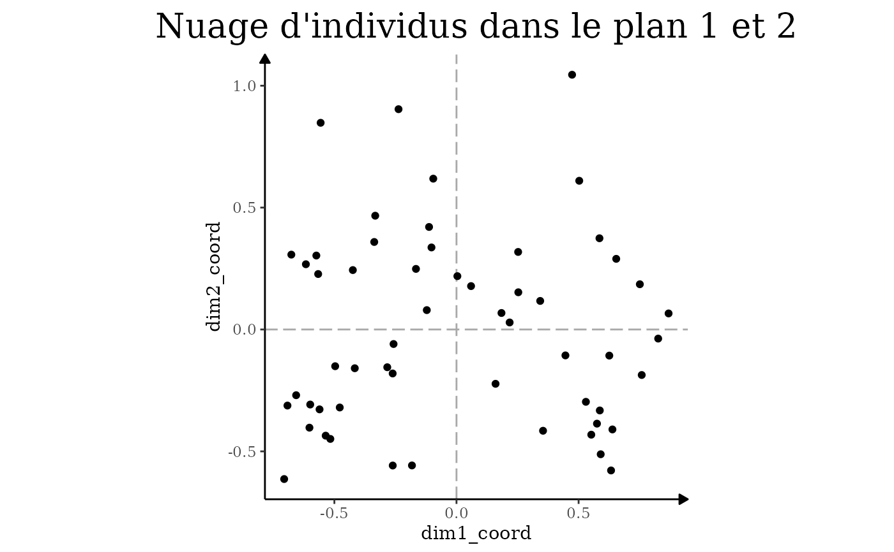

On veut souvent visualiser rapidement un nuage d'individus sans trop y passer du temps. Cette fonction est un raccourci à cela, elle permet de faire
Examples
# on commence par créer un résultat d'ACM :
resultat <- createurs_de_contenus_pol |>
ACM(variables_supplementaires = personne)
#>
#> ── Variables actives
#> L'ACM a été réalisé sur ces variables actives : `titre`, `orientation`,
#> `orientation2`, `debut`, `visage_decouvert`, `abonnes`, `genre`, `age`,
#> `streamer_plein_temps`, `collectif`, `livre`, `podcast`, `twitter`, `facebook`,
#> `instagram`, `tiktok`, `discord`, `twitch`, …, `partenariat_entreprise`, and
#> `autres_services`.
#>
#> ── Variables supplémentaires
#> Les variables supplémentaires sont les suivantes : `personne`.
# puis on peut sortir le graphique
resultat |>
nuage_individus() +
theme_acm()
